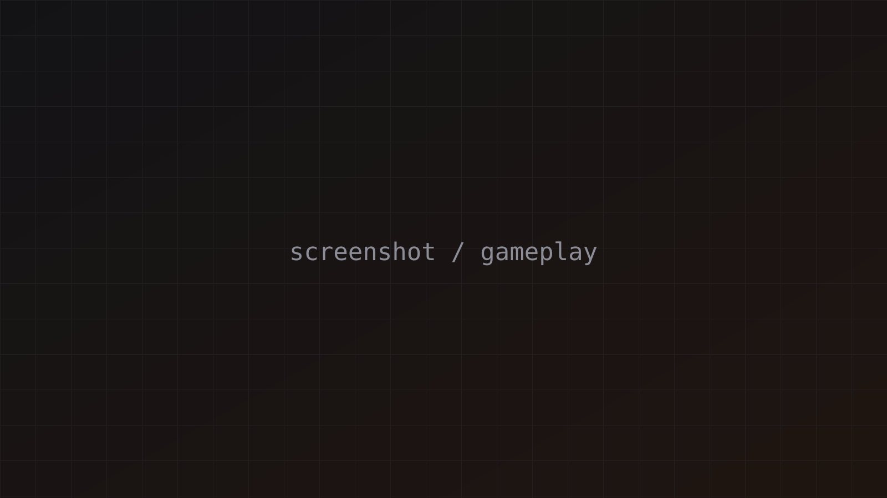

Feature name
What it does and how you built it, in two or three lines. The clip shows it working.
A 2D precision platformer with a custom character controller and tight, responsive movement.
Gameplay Programmer
What the game is, the core idea and the context it was made in (university course, game jam, personal project). Two or three short paragraphs is enough.
What it does and how you built it, in two or three lines. The clip shows it working.
Same idea: one clip, one short explanation.
Explain one or two interesting problems and how you solved them. A short code snippet helps.
// Jump buffering: remember the jump input for a short time
if (Input.GetButtonDown("Jump")) jumpBufferTimer = jumpBufferTime;
else jumpBufferTimer -= Time.deltaTime;
if (jumpBufferTimer > 0f && coyoteTimer > 0f) Jump();